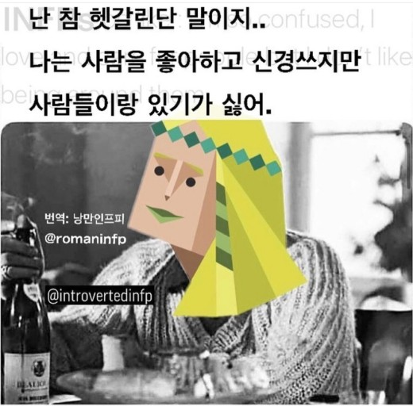

- intp
- infp
- infj
infp
열정적인 중재자, 잔 다르크형
인간 본연에 대한 애정으로 사람들의 장점을 발견하고, 이들의 가능성을 성취할 수 있도록 도우며, 세상을 더 나은 곳으로 만든다.
하지만 대그룹에 있을 경우 그들의 에너지가 쉽게 고갈되는 경향이 있고, 그들이 엄선한 친밀도가 높은 소수의 사람들과 상호작용 하는 것을 선호한다.
혼자 있기를 좋아하는 개인적인 성향도 있지만, 수줍음과 혼동되어서는 안되며 혼자 시간을 보내는 것으로부터 에너지를 얻는다는 것을 의미한다.
